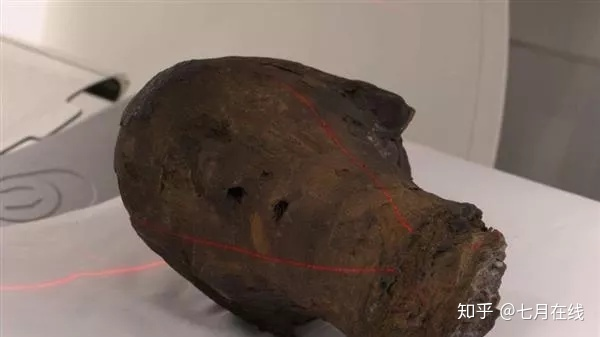
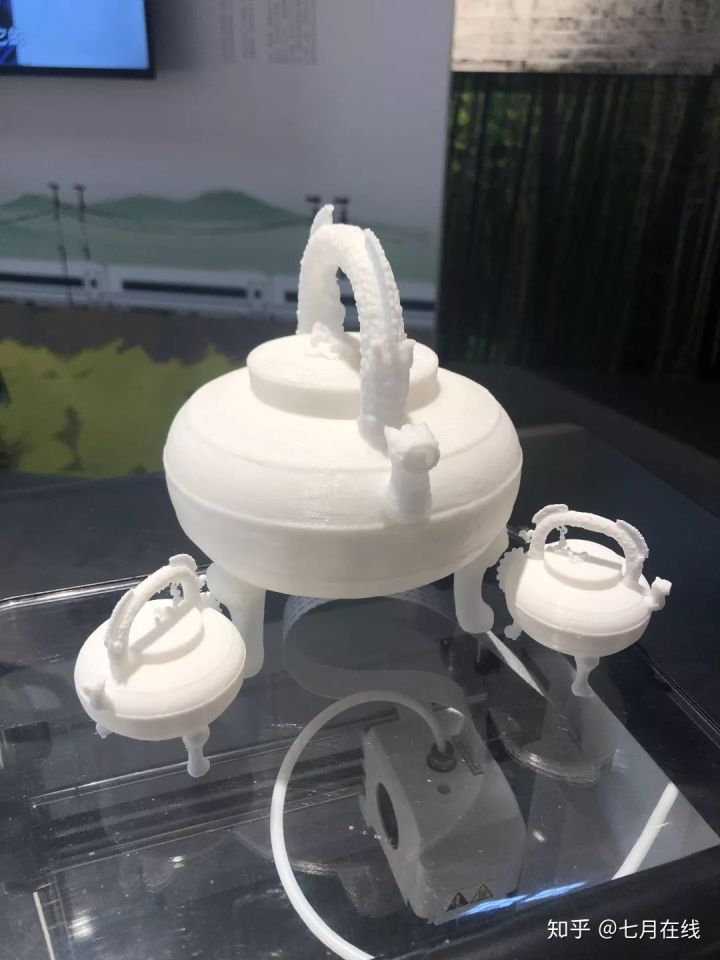
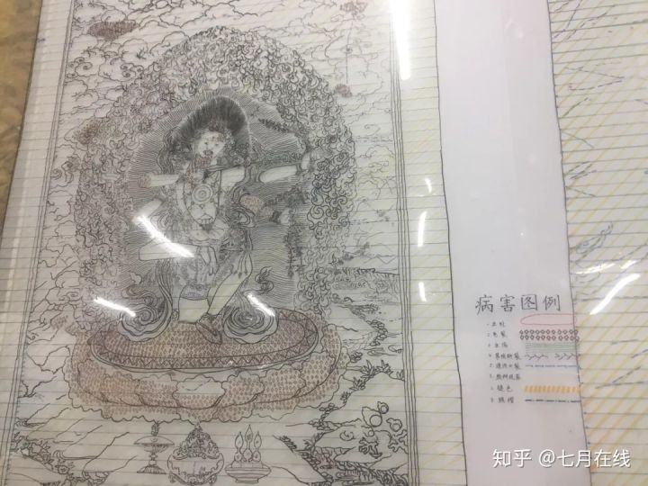

2018年国际博物馆日，《清明上河图3.0》在故宫展演，实体造景与全息影像技术、舞台表演相结合，真人演员与虚拟角色交织互动，让游客“身临其境”地感受了汴京的盛世繁华。
2019年开年的“紫禁城里过大年”以新技术复苏旧年月，以数字技术、虚拟影像、动作捕捉等科技手段，呈现出了紫禁城的年节文化。“紫禁城上元之夜”的灯光惊艳了世人，利用高科技向人们展示的虚拟现实影片《千里江山图卷》等让公众沉浸其中，感受了一番别有不同的节庆味、人情味。
3D打印。例如，云冈石窟研究院联合浙江大学文化遗产研究院文物数字化团队，利用3D打印技术实现了云冈石窟第三窟1∶1的还原。 例如，英国梅德斯通博物馆就使用3D打印技术，通过扫描，数据重组，重塑了一具有2500年历史的木乃伊的脸部并在博物馆展出。

通过现场江南特色文物3D打印演示以及3D打印文物模型展示让现场的观众可以近距离的观看文物细节。
利用3D打印仿制模型结合文字介绍的展示方式，在避免展示损坏的同时又增加了观众的互动性和体验感，同时也有益于青少年对于历史文化的理解和学习。

另外，3D打印仿真文物还可作为纪念品提供给普通大众购买收藏，并进行个人定制，结合潮流创新创作等，让文物保护和展览在新时代中呈现了别样的留念和传承。随着时代的发展，3D打印在文化的展示和传承起到了承上启下的作用。3D打印通过数字三维技术，复制了那些不为人知的历史，叠加了新时代的面貌，作为纽带仿佛为我们讲述了一个历久弥新的故事，让千年的历史与现在串联起来，呈现在我们面前。

修复唐卡其中就有鲜为人知的藏传佛教艺术品——唐卡。养心殿佛堂与皇帝的寝室紧密相连，堂内挂供的唐卡，曾是乾隆皇帝私人修习密法的重要法宝，260多年来秘不示人，法相庄严。凭借现代科技，故宫文物医院的文物修复专家们能够对这些唐卡进行诊断治疗。通过小分子结构设备、热性能设备、应用文物CT机等，修复师们对唐卡正、反面仔细拍照，“地毯式”扫描，发现了多种病害隐患——虫蛀、龟裂、尘垢、装帧断裂、缝线开裂、颜料脱落、颜料褪色、画面褶皱等，然后逐一标注病害示意图，拿出“治疗方案”。